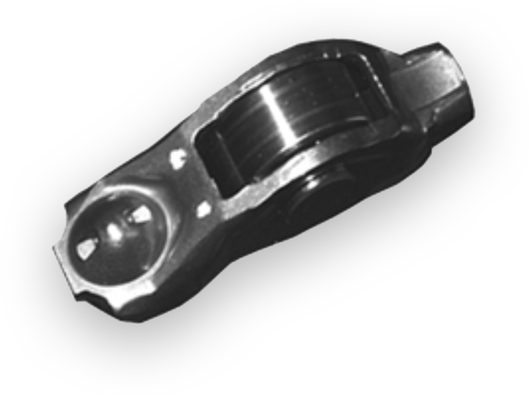

Rolling Finger Follower
Assembly
Assembly


Robust3D Rolling Finger Follower (RFF) solution inspects the types of RFFs, and verifies the proper installation
and placement of RFFs in engines to ensure assembly correctness.
RFFs are critical in engine assembly as they transfer camshaft rotary movement into valve stem up and down
movement. However, in most engine designs today, RFFs sit freely between hydraulic lash adjuster and valve stem
without constraints before camshaft is installed. This exposes strong likelihood of assembly errors which, if not
caught, will cause catastrophic engine failure in the final assembly. Coherix uses the latest Tru3D smart sensor
to detect the different types of RFFs for present or absent, and the correct orientation. With the Tru3D sensor
mounted on a robot, the Robust3D RFF solution identifies the real 3D geometry of the RFF using millions of 3D data
points. It contains pass-through defects, and will report a failure while archiving the powerful 3D data for
traceability.

Typical Piston Assembly Failure Modes
Missing cir-clip
Pin-to-piston height
Double cir-clips
Cir-clip clocking wrong